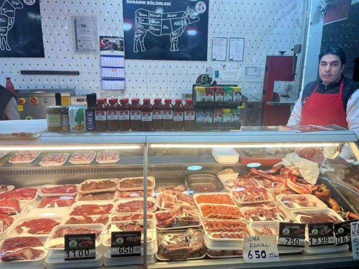

AYKAN ET & MANGAL
Kasap & Izgara • Tanzim Satış Mağazası (2 Şube)
🥩 Ürünlerimizden
Taze ve günlük — tıklanınca büyür. Tüm fiyatlar için sipariş botuna bakın.


Günlük Taze Kesim Et, Kuzu, Tavuk & Mangal: Tanzim Satış Fiyatlarıyla!
Aykan Et & Mangal güvencesiyle; dana antrikot, kuzu pirzola, günlük taze kıyma, özel soslarımız ve doğal mangal kömürü doğrudan tezgahımızdan sofranıza.
📍 2. Şube (Esenler): Kemer Mah. 926. Sokak No: 2/C Esenler

📍 Et, Balık, Tavuk, Kuzu Tanzim Satış Mağazası (Göztepe Bağcılar)
Maslak Cad. 95A Bağcılar (Göztepe Metro Durağı yanı) şubemiz ve mangal kömürü reyonumuz.

🔪 Günlük Taze Kesim Tezgahımız & Özel Soslarımız
Dana Kemikli 650 TL • Dana Kuşbaşı/Kıyma 750 TL • Dana Antrikot 1100 TL • Kuzu Et 1069 TL • Kuzu Pirzola 1399 TL
🔥 Aykan Özel Aile Mangal Paketi
- 🥩 Dana Kuşbaşı / Özel Köfte 1 Kg
- 🍗 Marine Tavuk Kanat / Kelebek 1 Kg
- 🔥 Doğal Mangal Kömürü 1 Torba
- 🌶️ Tezgah Üstü Özel Mangal Sosu 1 Şişe
🌯 Viral Tortilla & Lavaş Kebabı
- 🥩 Özel Çekim Kıymalı Tortilla Rulo 4 Şiş
- 🍗 Soslu Tavuk Lavaş Rulo 4 Şiş
- 🧂 Özel Kasap Baharat Çeşnisi Dahil
- ⏱️ Tava / Fırın / Mangalda 10 Dakika
📦 Haftalık Tanzim Aile Et Kutusu
- 🥩 Dana Kemikli Et (650 TL/Kg) 1 Kg
- 🥩 Dana Kuşbaşı / Kıyma (750 TL/Kg) 1 Kg
- 🍗 Günlük Taze Tavuk Çeşitleri 1 Kg
- 🛵 Göztepe & Kemer Çevresi Hızlı Servis
İki Şehir, İki Şube, Tek Güvence: Aykan Et & Mangal
Aykan Et & Mangal, Bağcılar ve Esenler'de kasap & izgara tanzim satış konseptiyle hizmet veren mahalle kasabınızdır. Et • Balık • Tavuk • Kuzu — hepsi günlük taze, hepsi vitrinde net fiyatla. Bizim işimiz sadece et satmak değil; sofranıza güvenle koyacağınız lezzeti teslim etmektir.
Günlük Taze Kesim
Sabah kesilen et, akşam sofranızda. Kendi kesimhane düzenimizle ara bulucu yok — kasaptan direkt tanzim fiyatına. Zırhta çekilmiş kıyma, gözünüzün önünde.
Şeffaf Vitrin Fiyatı
Fiyatta sürpriz yok: vitrinde ne yazıyorsa ödesiniz. Kemikli 650 • Kuşbaşı/Kıyma 750 • Antrikot 1.100 • Kuzu 1.069 • Pirzola 1.399 TL/Kg.
Soğuk Zincir & Hijyen
Kesimden tezgaha kadar 0-4°C soğuk zincir. İzlenebilir, belgeli ve denetlenen süreç — çünkü kasaplık ciddi iştir ve güven bizim sermayemizdir.
%100 Helal Güvencesi
Kesimden sofranıza her adımda helal ve şeffaf süreç. Semtimizin 20 yıllık güvendiği kasap olma kararlılığından taviz vermiyoruz.
Hızlı Sipariş & Teslimat
WhatsApp'tan veya Telegram botumuzdan sipariş verin — hazırlayalım: gel-al ya da adresinize gönderelim. Restoran, otel ve sitelere kurumsal tedarik.
Mahallenin Kasabı
Her kesim tartıda, göz önünde. Komşumuzun trust'ı bizim için en değerli reklam: getirin tanışalım, numunemizi ikram edelim.
Et, Sağlık, Bilim ve Mangal: Aykan Blog
Her hafta yeni yazılar — sağlıklı beslenmeden mangal ipuçlarına, fiyat analizinden lezzet bilimine.
Kırmızı Et ve Sağlık: Doğru Bilinen 7 Yanlış
"Et kanser yapar", "et kilo aldırır", "haftada bir kez yenmeli"... Peki gerçeği ne? Uzman görüşleriyle mitleri tek tek ayıkladık.
Yazının tamamı →
1) "Kırmızı et zararlıdır" — Zararlı olan miktar ve işleme yöntemidir; 100-150 gr porsiyon dana eti haftada 2-3 kez, demir, B12 ve çinko için mükemmel bir kaynaktır.
2) "Et kilo aldırır" — Aldıran yağ ve ekmek oranıdır; yüksek proteinli et aslında tokluk sağlar.
3) "Beyaz et her zaman daha iyi" — Dana eti, tavuğun 3 katı kadar demir içerir.
4) "Kıyma sağlıksızdır" — Tek parça ettenseniz şart değil: bizim tezgâhta kıyma tek parça etten, gözünüzün önünde çekilir.
5) "Yanmış kabuk lezzetlidir, zararsızdır" — Aşırı yanmış kısımlar atılmalıdır.
6) "Donmuş et besin değeri kaybeder" — Doğru koşullarda dondurma değeri neredeyse korur.
7) "Kasap eti market etinden pahalıdır" — Ara bulucu olmadığımız için çoğu zaman daha ucuza gelir; üstelik gramaj ve tazelik garantilidir.
Mangalda Kanserojen Riski Nasıl %90 Azaltılır?
Heterosiklik aminler (HCA) nedir ve marine etmenin mucizesi ne? Araştırma sonuçlarıyla 4 altın kural.
Yazının tamamı →
Kural 1: Kömürü tam kor (beyaz) haline getirin — alevle pişirmeyin.
Kural 2: Eti aleve 15 cm'den yakın tutmayın.
Kural 3: Yanmış kısımları kesinlikle atın.
Kural 4: Marine edin! Çalışmalar, sarmısak-kekik-liimon suyu bazlı marinelerin HCA oluşumunu %90'a kadar azalttığını gösteriyor. (Kansas State Üniversitesi araştırmaları) — Marinasyon bizden, güven sizden. 🔬
2026'da Et Fiyatları: Kasap Fiyatı Neden Daha Ucuz?
Market raflarıyla kasap tezgâhı arasındaki fark sadece tesadüf değil. Zinciri kırmanın ekonomisini anlattık.
Yazının tamamı →
Market eti üreticiden → toptancı → depo → raf yolculuğunda 3-4 el değiştirir; her adım fiyat ekler. Kasabımızda kesim bizde, tezgah bizde: ara bulucu sıfır. Ayrıca önceden kıyılmış paket etlerde "ne olduğunu göremezsiniz"; bizim vitrinde etin kesimi, tazeliği ve gramajı göz önünde. Piyasa dalgalanırken tanzim fiyatlarımızı koruma gücümüz kendi kesimhane düzenimizden gelir.
Hangi Et Ne İçin? Antrikot, Pirzola, Kuşbaşı Farkları
İzgara için hangisi? Güveç için hangisi? Misafir sofrasına ne koymalı? 20 yıllık ustalığın kesim haritası.
Yazının tamamı →
Antrikot (1.100 TL/Kg): Izgara ve tavaya en uygun premium kesim — yağı damarında, lezzeti zirvede.
Kuzu Pirzola (1.399 TL/Kg): Misafir sofralarının yıldızı; hızlı pişer, şık görünür.
Kuşbaşı (750 TL/Kg): Sulu yemek, güveç ve kavurmanın vazgeçilmezi.
Kıyma (750 TL/Kg): Köfte ve burger — yağ oranını siz seçin, biz çekeyim.
Kemikli Et (650 TL/Kg): Çorba ve yahninin lezzet sırrı: kemik iliği.
Emin değilseniz sorun — doğru kesimi birlikte seçelim. 🥩
Mangal Ustasının 7 Altın Kuralı
Kömürden dinlendirmeye — ateşle oyunu ustalıkla oynayanların sırları. Kural 5'e dikkat!
Yazının tamamı →
1) Kömür meşe olsun — hızlı yanar, uzun kor kalır.
2) Kor tam beyazlaşmadan eti koymayın.
3) Izgara telini temizleyin — eski kalıntılar acı verir.
4) Et oda sıcaklığına yaklaşsın (20 dk bekletin).
5) Eti sık çevirmeyin — bir kez çevirin; her çeviriş suyunu kaybettirir.
6) Tuzu ateşe koymadan hemen önce atın.
7) Pişince 5 dakika dinlendirin, sonra kesin — suyu etin içinde kalsın. 🔥
10 Dakikada Viral Tortilla Kebabı (Ev Tarifi)
Sosyal medyanın gündemine oturan lezzeti evinizde 10 dakikada yapın — malzemeler bizden!
Tarifin tamamı →
Malzemeler: 500 gr Aykan özel çekim kıyma, 2 lavaş, 1 soğan, domates, turşu, özel sos (yoğurt + sarımsak + maydanoz), tereyağı.
Yapılışı: 1) Kıymayı baharatla 5 dk soteleyin. 2) Lavaşa kıymayı ve turşuyu sarın. 3) Tereyağlı tavada 2 dk yüzeyini kızartın. 4) Üzerine sosu dökün, servis edin! — Malzemelerimiz tezgâhımızda, denemek için uğrayın. 🌯
Sosyal Medyanın Gündemi: Tortilla Kebabı Neden Bu Kadar Viral Oldu?
Milyonlarca izlenme alan 10 dakikalık tarif! Viral lezzetlerin arkasındaki psikoloji ve trendleri yakalamanın sırrı.
Yazının tamamı →
Tortilla kebabı, TikTok ve Instagram'da milyonlarca kez izlendi — çünkü üç şeyi bir arada sunuyor: hız (10 dakika), görsel şölen (sarım anı) ve lezzet sürprizi. Trend yemeklerin ortak sırrı budur: az emek, çok ödül. Biz de tezgâhımızda trendleri takip ediyoruz: viral tortilla, lavaş rulo ve marine çeşitleri her gün hazır. Sosyal medyada gördüğünüz lezzeti ertesi gün tezgâhımızda bulabilirsiniz — trendi yakalayan kasap! 🌯
Ette Soğuk Zincir: Market Poşetinden Buzdolabına 20 Dakika Kuralı
Eti eve götürürken yolda geçen her dakika önemlidir. Bakteriler 20 dakikada ikiye bölünür — güvenli alışverişin kuralları.
Yazının tamamı →
Kural 1: Et alışverişini market turunun SONUNA bırakın, poşeti güneşten koruyun.
Kural 2: Eve varınca eti hemen buzdolabına kaldırın (0-4°C) — kıyma 1 gün, kuşbaşı 2-3 gün, bütün et 3-5 gün dayanır.
Kural 3: Donduracaksanız hava almayacak pakette -18°C'de 3 aya kadar.
Kural 4: Çözdürme SADECE buzdolabında olsun — tezgâh üstü çözdürme bakteri üretir.
Bizim tezgâhta soğuk zincir kesimden size ulaşana kadar hiç kırılmaz: vitrin dolapları 0-4°C'de, hijyen belgeli ve izlenebilir süreç. Kasaplık ciddi iştir! 🧊
Protein Hesabı: Sporcular ve Aileler İçin Günlük Et Rehberi
70 kilo bir yetişkin günde kaç gram protein almalı? Çocuklarda büyüme, sporcuda kas onarımı — porsiyon tablosuyla açıkladık.
Yazının tamamı →
Günlük ihtiyaç: sedanter yetişkin ~0.8 g/kg (56 g), aktif sporcu 1.6-2 g/kg (112-140 g).
Pratik menü: 3 yumurta (18 g) + 150 g dana kuşbaşı öğle (39 g) + 200 g tavuk akşam (46 g) + 1 kase yoğurt (10 g) = 113 g — sporcunun günü tamam!
Çocuklarda: büyüme çağında B12, demir ve çinko eksikliği öğrenme kapasitesini düşürür; haftada 2-3 kez kaliteli et destek olur.
Fiyat-performans: kuşbaşı ve kıyma, en ekonomik tam protein kaynaklarındandır — 750 TL/Kg ile 26 g/100 g protein. Güçlü kaslar kasaptan geçer! 💪
20 Yıldır Bu Semtte: Aykan'ı Ayıran 5 Şey
Mahalle kasabı olmak kolaydır, 20 yıl mahallenin güvenini taşımak zordur. Bizi biz yapan 5 farkı müşterilerimizden dinledik.
Yazının tamamı →
1) Terazi şeffaflığı: her kesim göz önünde, gramaj net — "tartıda sürpriz yok" poltikamızdır.
2) Kendi kesimimiz: aracısız tanzim fiyatı bu yüzden mümkün.
3) Zırhta çekim: kıyma tek parça ettir, istediğiniz yağ oranında, gözünüzün önünde.
4) 22:30'a kadar açık: iş çıkışı çalışan komşunun pratik çözümü.
5) İki şube, tek kalite: Bağcılar Göztepe ve Esenler Kemer — aynı ustalık, aynı fiyat.
Müşterimiz ne diyor? "Aykan'dan almadığım gün etin tadı değişiyor!" — 20 yıllık güvenin özeti bu. Siz de uğrayın, tanışalım. 🤝